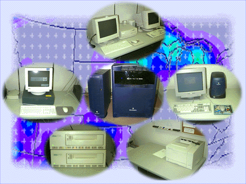

PIRCS Intranet
PC and Macs | Tape
drives | Origin | Alpha's
| O2's | Vincent | Printers
News of the moment: (9/16/97) After all we went through with the 9 gig drive (it's on its way to be replaced by the way) we are now having trouble with the 4mm. I will let people know via email. I have also placed an archive of my email (good, bad, typo's and all) on-line and will link it into this page soon for people to have for their records. You can take an early look. |
Projects: HDF file interface to WWW. This is in the early stages now. More, plus some VRML soon. I am working up some info on LAM MPI on networked Linux boxes. |
Current News Items for PIRCS systems (8/25/97):
MPI networking news:
I am working up some pages on the MPI network on the PIRCS systems.
Including locations of the programs and libraries and header files and
some example code from various locations.
Vincent NFS:
Pan and I discovered a problem with the NFS mounting being done by the PIRCS Vincent Alpha's. This did not affect the
other UNIX machines. However, it did make the Vincent systems
unuasable. This was resolved, finally, with a option to the mount
string making it look like:
mount -t nfs -o vers=2 pircss0.agron.iastate.edu:/usr/people/pircs
./pircs
Note the vers=2 option, which was required. Vincent claims NFS3
support, but does not seem to fully have it in fact. The other
non-vincent DEC's were fine at version 3. You will need to go root o
the system to do this, just type su and when prompted for a passwd,
give your normal vincent passwd.
Questions regarding the PIRCS computers can be addressed to:
Douglas FIls
fils@iastate.edu
4-6196 voice (4-3555 for the main IITAP offive)
4-9933 FAX